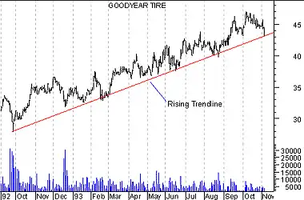

Introduction - Trends
Trends
In the preceding section, we saw how support and resistance levels can be penetrated by a change in investor expectations (which results in shifts of the supply/demand lines). This type of a change is often abrupt and "news based."
In this section, we'll review "trends." A trend represents a consistent change in prices (i.e., a change in investor expectations). Trends differ from support/resistance levels in that trends represent change, whereas support/resistance levels represent barriers to change.
As shown in Figure 19, a rising trend is defined by successively higher low-prices. A rising trend can be thought of as a rising support level--the bulls are in control and are pushing prices higher.
Figure 19
Figure 20 shows a falling trend. A falling trend is defined by successively lower high-prices. A falling trend can be thought of as a falling resistance level--the bears are in control and are pushing prices lower.
Figure 20

Just as prices penetrate support and resistance levels when expectations change, prices can penetrate rising and falling trendlines. Figure 21 shows the penetration of Merck's falling trendline as investors no longer expected lower prices.
Note in Figure 21 how volume increased when the trendline was penetrated. This is an important confirmation that the previous trend is no longer intact.
Figure 21

As with support and resistance levels, it is common to have traders' remorse following the penetration of a trendline. This is illustrated in Figure 22.
Figure 22

Again, volume is the key to determining the significance of the penetration of a trend. In the above example, volume increased when the trend was penetrated, and was weak as the bulls tried to move prices back above the trendline.